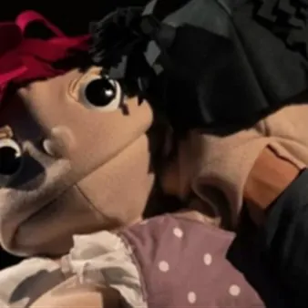

dom 15 nov · dalle 17:00
5 minûts e i torni
15/11/26 ore 17 organizzato dal Teatri Stabil Furlan Teatri cun buratins Dai 4 agns in sù Di e cun Michele Polo Buratins di Valentina Picili Lûs di Valerio Bergnach Regjie di Caterina Di Fant Fotografiis di Claudio Cescutti Produzion Teatro della Sete Riche e Florian a son sûr e…
 Indicazioni
Indicazioni
- Costi e prenotazioni
- Costo non indicato · Prenotazione non indicata
- Programma
- Programma da verificare. Apri la fonte ufficiale per orari e possibili aggiornamenti.
- In caso di maltempo
- Nessuna indicazione specifica pubblicata.
- Note
- Acquisito automaticamente dalla fonte.
L’EVENTO
Descrizione completa
Teatri cun buratins
Dai 4 agns in sù Di e cun Michele Polo
Buratins di Valentina Picili
Lûs di Valerio Bergnach
Regjie di Caterina Di Fant
Fotografiis di Claudio Cescutti
Produzion Teatro della Sete
Riche e Florian a son sûr e fradi. Tropis robis sucedarano tal lôr supermarcjât intant che il barbe a si slontanarà cinc minûts par prelevâ i bêçs ae casse automatiche? Riche e Florian sono sorella e fratello. Quante cose accadranno loro al supermarket, mentre lo zio si assenterà cinque minuti per prelevare contanti al bancomat? Par cheste tierce rassegne “Canais – Teatri par frutis e fruts”, inseride come simpri te consolidade stagjon “Udine città teatro per le bambine e i bambini”, inmaneade di CSS Teatro Stabile d’innovazione del Friuli Venezia Giulia, Teatro Nuovo Giovanni da Udine e il Teatri Stabil Furlan e propon cuatri apontaments cul teatri in lenghe minoritarie. La atenzion ae lenghe minoritarie dal TSF e nas come estension necessarie de atenzion ae lenghe furlane, compit e obietîf de Associazion fin de so fondazion.
In sene chest an o viodarês i pipinots di Michele Polo che a tabain la marilenghe intun lavôr dal simpatic titul “Cinc minûts e i torni”, une tenare storie di Nadâl contade cun il bal e la poesie furlane che a si clamarà “Neveade”, e une cjassose narazion di storiis de Sardegne (no steis a preocupâsi, capibil ae perfezion) de compagnie “Is Mascareddas” di Cagliari. Par i plui piçui (ma piçui piçui), compagnâts di mari e pari, un incuintri-spetacul-laboratori dal titul “Doremifâsben”, cjants e musichinis par fruts. Us spietin! Per questa terza rassegna ‘Canais’ – Teatri par frutis e fruts’, inserita come sempre nella collaudatissima stagione ‘Udine città teatro per le bambine e i bambini’, organizzata dal CSS Teatro Stabile d’innovazione del Friuli Venezia Giulia e dal Teatro Nuovo Giovanni da Udine, il Teatri Stabil Furlan propone quattro appuntamenti con il teatro in lingua minoritaria. L’attenzione alle lingue minoritarie del TSF nasce come estensione doverosa dell’attenzione alla lingua friulana, compito e obiettivo dell’Associazione fin dalla sua fondazione.
In scena quest’anno vedrete i burattini di Michele Polo che parlano la marilenghe in un lavoro dal simpatico titolo di ‘Cinc minûts e i torni’, una dolcissima storia natalizia raccontata con le arti della danza e della poesia friulana che si chiamerà ‘Neveade’ e una roboante narrazione di storie della Sardegna (non vi preoccupate, perfettamente comprensibili) della compagnia ‘Is Mascareddas’ di Cagliari. Per i più piccoli (ma piccoli piccoli), naturalmente accompagnati da mamme e papà, un incontro – spettacolo – laboratorio dal titolo ‘Doremifâsben’, canti e musiche per i bimbi. Vi aspettiamo. Biglietto posto unico 8€ Per informazioni: info@teatristabilfurlan.it / tel 392 3273719
www.teatristabilfurlan.it
IL PROGRAMMA
Programma e orari
Appuntamenti raccolti dalle fonti elencate. Dove manca un orario, non è ancora disponibile in questa scheda.
Programma pubblicato
- Dal 2026-11-15 al 2026-11-15
INFORMAZIONI UTILI
Prima di partire
- Controllare la fonte prima di partire.
ORGANIZZAZIONE